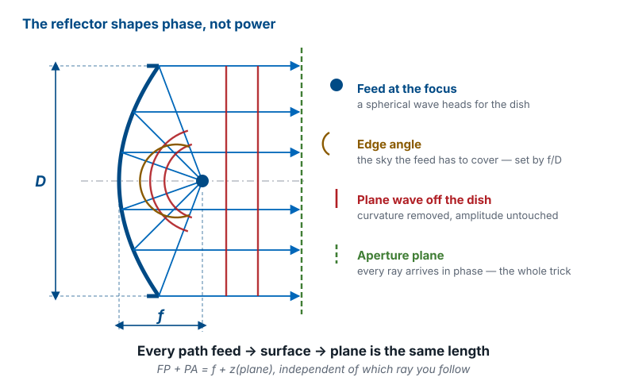
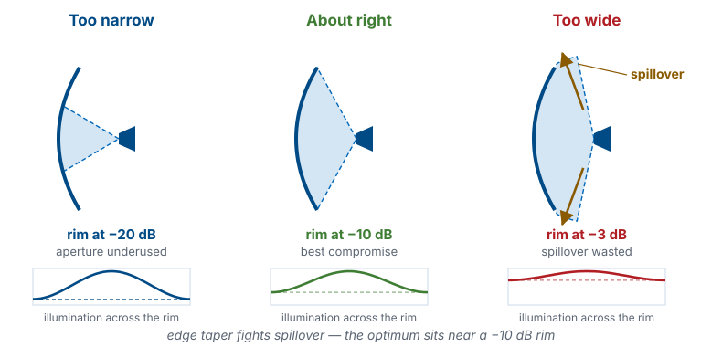
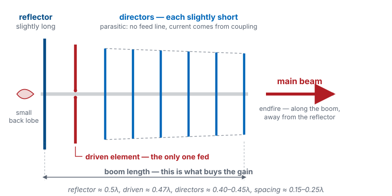

L11 - High-Gain Antennas#
High-Gain Antennas
High gain means a large radiating area driven in phase.
Lesson 11 · Antennas, Phased Arrays, and Radar Systems · Dr. Neil Rogers
Slides
Learning Objectives
- I can compute an aperture antenna's gain and beamwidth from its physical size, and explain why gain is fundamentally a statement about area.
- I can explain how a parabolic reflector's equal-path geometry turns a spherical wave into a plane wave, and identify what f/D, feed illumination, blockage, and spillover do to aperture efficiency.
- I can explain how a Yagi-Uda gets gain from parasitic elements, and how detuning the reflector and directors sets the phase that puts the beam endfire.
- I can describe the array as the third road to high gain, and state why the next module is devoted to it.
- I can select an appropriate high-gain antenna for a given application and defend the choice with numbers.
Where we were
Lesson 10 handed you patches, slots, and horns — single radiators that top out somewhere between 6 and 20 dBi. That is enough for a handheld, a wall-mounted access point, or a short hop across the airfield. It is nowhere near enough to close a link to a satellite 36,000 km away, or to put a radar beam on a target ten miles out. Today you get the antennas that live at 20, 30, and 40 dBi, and — more importantly — the single idea underneath all three of them.
Midterm Project — Antenna Pattern Measurement
Midterm Project — Antenna Pattern Measurement
The midterm project is introduced today and is due at L20. You will design or select an antenna, measure its pattern using the techniques you learn in L12–L14, and report its gain, beamwidth, sidelobe levels, and polarization. Full requirements come in the project handout distributed in class. Start thinking now about which antenna you want to build — the selection framework at the end of this lesson is exactly the reasoning your report will have to show.
The one idea
Here is the whole lesson in one sentence. High gain means a large radiating area driven in phase. Every high-gain antenna ever built is a different scheme for assembling a big, coherent aperture: a reflector borrows a mirror’s area, a Yagi borrows its neighbors’ currents, an array simply buys the area one element at a time.
Gain is area
The quantitative version is the aperture formula from Lesson 2:
with \(A\) the physical aperture area and \(\eta_{\text{ap}}\) the aperture efficiency — the fraction of that area you actually manage to use. Read the physics before the algebra: \(A/\lambda^2\) counts how many square wavelengths the antenna spans, and gain is proportional to that count. An aperture is not “big” in meters. It is big in wavelengths.
The circular-dish shortcut
For a circular dish of diameter \(D\), \(A = \pi D^2/4\), and the formula collapses to the one you should memorize:
Two consequences drop straight out. Gain goes as \(D^2\), so every doubling of diameter buys 6 dB. And gain goes as \(1/\lambda^2\), so the same dish gains 6 dB every time you double the frequency — which is why the satellite industry keeps climbing in frequency.
Beamwidth comes from the same size
Beamwidth runs the other way. Lesson 6 established the Fourier logic: a wider aperture is a narrower beam, and the beamwidth of an aperture of size \(D\) scales as \(\lambda/D\). For a reflector with a realistic illumination taper, the rule of thumb is
Double the dish and the beam halves while the gain climbs 6 dB. Those are the same statement: power you no longer waste sideways is power you put on boresight.
Where the 70° comes from
Note
The \(70^\circ\) coefficient already assumes a tapered illumination. A perfectly uniform circular aperture gives \(58^\circ\lambda/D\) with \(-17.6\) dB sidelobes, but nobody illuminates a dish uniformly — you will see why in Part 3. Use \(70^\circ\) for design; use the interactive below to build the reflex.
Key point
Gain is a statement about effective area in units of \(\lambda^2\), not about the shape of the antenna. \(A_e = \eta_{\text{ap}}A = G\lambda^2/4\pi\) is the number Friis cares about. Reflectors, Yagis, and arrays are three different ways to buy the same thing.
Gain, beamwidth and surface error
Drive the sliders below and watch two numbers move together. Set \(D/\lambda\) and the dish redraws with a tick on the rim for every wavelength across it, while the beam cone narrows on the same canvas. Notice that gain climbs 6 dB per doubling of \(D\) while the beam halves — and then open the surface-error slider and watch the amber curve: hold the panel tolerance fixed and grow the dish, and surface error quietly caps how far you can push it.
Worked example — a 1 m dish at 12 GHz
Worked example — a 1 m dish at 12 GHz
A home satellite-TV dish, roughly 1 m across, receiving Ku band at 12 GHz. Take \(\eta_{\text{ap}} = 0.65\).
Wavelength. \(\lambda = c/f = (3\times10^{8})/(12\times10^{9}) = 0.025\ \text{m}\), so \(D/\lambda = 40\) and the dish is forty wavelengths across.
Gain. \(G = 0.65\ (\pi \cdot 40)^{2} = 0.65 \cdot 15791 = 1.03\times10^{4}\), i.e. \(10\log_{10}(1.03\times10^{4}) = 40.1\ \text{dBi}\).
Beamwidth. \(\theta_\text{HP} \approx 70^\circ (0.025/1) = 1.75^\circ\). That is why a dish that drifts two degrees off the satellite goes dark.
Worked example — a 1 m dish at 12 GHz (cont.)
Worked example — a 1 m dish at 12 GHz (cont.)
Effective aperture. \(A_e = \eta_{\text{ap}}A = 0.65 \cdot \pi(0.5)^2 = 0.51\ \text{m}^2\).
Sanity check on the far field. \(2D^2/\lambda = 2(1)^2/0.025 = 80\ \text{m}\). You cannot measure this antenna across the lab — which is exactly the problem L12 takes up.
The parabolic reflector
A reflector does not amplify anything. It takes the spherical wave a small feed already radiates and rearranges its phase so that a large flat area leaves the antenna in step. The parabola is the surface that does this exactly.
Why a parabola

The equal-path property
Put the vertex at the origin with the axis along \(z\), so the surface is \(z = \rho^{2}/4f\) and the focus sits at \(z = f\). A parabola’s defining property is that the distance from the focus to a point \(P\) on the surface equals \(f + z_P\). A ray from the focus to \(P\) then travels parallel to the axis to some aperture plane at \(z = z_a\), covering a further \(z_a - z_P\). Add them:
The \(z_P\) cancels. Every ray, edge to center, takes the same path length, so every point of the aperture plane is in phase. That single line of algebra is the entire reason parabolic reflectors exist.
f/D sets the feed’s job
Two design knobs follow from the geometry. The focal ratio \(f/D\) fixes how much sky the feed has to cover — the half-angle to the rim satisfies \(\tan(\theta_0/2) = 1/[4(f/D)]\):
\(f/D\) |
Edge half-angle \(\theta_0\) |
Character |
|---|---|---|
0.25 |
\(90^\circ\) |
focus sits in the plane of the rim; deep dish |
0.35 |
\(71^\circ\) |
deep — needs a very broad feed |
0.50 |
\(53^\circ\) |
the common compromise |
0.60 |
\(45^\circ\) |
shallow — needs a directive feed on a long support |
A deep dish (small \(f/D\)) shields the feed from ground noise but demands a feed with an almost hemispherical pattern. A shallow dish is easy to illuminate cleanly but puts the feed far out on a wobbly strut. Most prime-focus reflectors land between 0.3 and 0.6.
Where the efficiency goes
\(\eta_{\text{ap}} \approx 0.55\text{-}0.7\) for a good reflector. That missing 30–45% is not sloppiness; it is four unavoidable trades, and knowing them is what separates picking a dish from designing one.
Illumination taper versus spillover
The feed has a pattern. Aim a narrow feed at the dish and the rim sits 20 dB down: you have paid for aperture you are not using, and the effective area shrinks. Widen the feed and the rim brightens — but now power sails past the rim entirely and is simply gone, and on receive that spilled beam is looking at warm ground instead of cold sky.
The illumination trade-off

The 10 dB rule
These two losses pull in opposite directions, so there is an optimum, and it is famous: illuminate the rim about 10 dB below the center. That is the house rule of thumb for reflector feeds, and it is why a dish’s aperture distribution always looks like one of the tapers from Lesson 6 — with the sidelobe benefit that comes along for free (\(-13.3\) dB for uniform, but a real dish runs closer to \(-20\) dB because of the taper).
Blockage
A prime-focus feed and its struts sit squarely in the beam. Removing a blocked diameter \(d\) from a dish of diameter \(D\) costs roughly a factor \([1-(d/D)^2]^2\) in gain and raises the sidelobes, because you have punched a hole in the aperture distribution. On a 3 m dish a 15 cm feed is a rounding error. On a 45 cm consumer dish it is not — which is why the DirecTV dish on the roof looks oval and has its arm hanging off the bottom.
Offset feed
That is an offset feed: the reflector is a slice cut off-axis from a much larger imaginary paraboloid, so the feed sits entirely outside the beam. An offset feed gives zero blockage and cleaner sidelobes, and the tilted slice is what makes the panel look taller than it is wide.
Surface accuracy — Ruze’s formula
Phase errors from a bumpy surface cost gain exponentially. Ruze’s formula states the penalty compactly:
What the Ruze penalty costs
with \(\sigma\) the RMS surface error. This course uses the result without deriving it. An RMS error of \(\lambda/50\) costs 0.27 dB, which is negligible; an RMS error of \(\lambda/16\) costs 2.7 dB, which is enough to disqualify the reflector. Note what this means for a fixed piece of hardware: a dish held to 0.5 mm RMS is essentially perfect at 6 GHz and has thrown away 1.7 dB by 30 GHz. Big dishes at short wavelengths are a machining problem, not an electromagnetics problem.
The efficiency budget
Multiply the pieces to get a budget:
Loss term |
Typical |
Why |
|---|---|---|
Spillover |
0.90 |
power past the rim |
Illumination taper |
0.85 |
rim darker than center |
Blockage |
0.95 |
feed and struts in the beam |
The efficiency budget (cont.)
Loss term |
Typical |
Why |
|---|---|---|
Surface error (Ruze) |
0.94 |
phase errors across the aperture |
Cross-pol, feed loss, misc. |
0.97 |
everything else |
Product |
0.66 |
a good, ordinary reflector |
The Yagi-Uda
The reflector buys area with a mirror. The Yagi-Uda buys it with the neighbors.

One element is fed; the rest listen
Exactly one element is connected to the transmitter — the driven element, a dipole near \(0.47\lambda\). Every other element is parasitic: no feed line, no source, just a rod that the driven element’s near field induces a current on. That induced current re-radiates, and the total pattern is the superposition of all of them. There is nothing new physically: this is Lesson 6’s radiation integral with several current filaments instead of one.
Detuning sets the phase
The trick is phase, and it is bought by detuning. A dipole slightly longer than resonance is inductive; a dipole slightly shorter is capacitive. The reactance sets the phase of the induced current relative to the driving field:
The reflector, about \(0.5\lambda\) and placed behind the driven element, runs long and inductive. Its current lags, and by the time its radiation reaches the front of the antenna it adds in phase with the driven element’s, while behind the antenna the two tend to cancel.
The directors, each around \(0.40\text{-}0.45\lambda\) and progressively shorter down the boom, run short and capacitive. Their currents lead by just enough that the whole structure passes a slow traveling wave forward.
Endfire, front-to-back, and diminishing returns
The result is an endfire beam: the main lobe points along the boom, away from the reflector, with a front-to-back ratio of 15–25 dB. One reflector is essentially all you get — a second one adds almost nothing, because the first already sees very little field behind it. Directors keep paying, but with diminishing returns:
Boom length buys the gain
Elements |
Boom length |
Typical gain |
|---|---|---|
3 (refl + driven + 1 dir) |
\(0.3\lambda\) |
7.5 dBi |
6 |
\(1.0\lambda\) |
10 dBi |
10 |
\(2.2\lambda\) |
12.5 dBi |
16 |
\(4.5\lambda\) |
14.5 dBi |
The rule of thumb is roughly 3 dB per doubling of boom length, and the gain flattens out as the boom grows. The boom, not the element count, is what buys the gain — stuffing more directors into the same boom does almost nothing. Practical single Yagis live between 8 and 15 dBi. Beyond that you stack several of them and let the stack act as an array.
Bandwidth is what you pay for it
What you pay for the simplicity is bandwidth. Everything on a Yagi is a detuned resonator, so a few percent off design frequency and the phases drift and the pattern degrades. That is fine for a fixed-channel TV, amateur, or point-to-point link — which is where you find them — and a poor fit for anything wideband.
The phenomenology is the point
Note
This course does not use mutual-impedance matrices. If you want the currents on the parasites exactly, you solve a coupled system with one row per element — that is what NEC did for you in L8. Here, the phenomenology is the point: long lags, short leads, and the beam goes toward the short end.
The third road: arrays
The third way to build a large in-phase aperture is the blunt one: build it out of \(N\) small antennas and feed them coherently. If the elements are spread out so the aperture actually grows with \(N\), the array gain over one element is at most
Steering without moving parts
Sixteen patches buy 12 dB over one patch; sixty-four buy 18 dB. And unlike a dish or a Yagi, the beam of an array is not welded to the structure — change the phase of each element and the beam moves, with no moving parts and in microseconds. That is the reason every modern radar, 5G base station, and satcom terminal is an array.
That capability is worth a module of its own, and it gets one. Module 3 develops the array factor, pattern multiplication, beam steering, grating lobes, and tapering, and you will steer a real beam on the ADALM-PHASER hardware. For today, just file the array alongside the reflector and the Yagi as the third road to the same destination: coherent area.
Choosing: five questions
Five questions, in this order, settle almost every real selection.
How much gain do I actually need? Run the link budget first. Gain you do not need costs money and pointing accuracy.
What frequency? Aperture antennas get small and cheap as \(\lambda\) shrinks; wire antennas get fragile.
How much bandwidth? Reflectors and horns are broadband. Yagis and patch arrays are not.
Does it have to move or steer? A dish steers mechanically and slowly; an array steers electronically and instantly; a Yagi mostly does not steer at all.
What are the cost, size, weight, and wind load? A 20 dBi antenna that cannot survive local wind and ice loading is not a usable answer.
Three roads, side by side
Reflector |
Yagi-Uda |
Planar array |
|
|---|---|---|---|
Practical gain |
25–60 dBi |
8–15 dBi |
15–40 dBi |
Bandwidth |
wide (feed-limited) |
narrow, a few % |
moderate |
Steering |
mechanical, slow |
fixed |
electronic, instant |
Three roads, side by side (cont.)
Reflector |
Yagi-Uda |
Planar array |
|
|---|---|---|---|
Profile |
bulky, 3-D |
long boom |
flat panel |
Cost driver |
surface accuracy |
almost nothing |
one T/R chain per element |
Worked selection — 20 dBi at 2.4 GHz for a ground station
Worked example — 20 dBi at 2.4 GHz for a ground station
You need a 20 dBi ground-station antenna at 2.4 GHz for a cubesat downlink. \(\lambda = 0.125\ \text{m}\), and \(G = 20\ \text{dBi} = 100\).
Required effective aperture. \(A_e = G\lambda^{2}/4\pi = 100(0.015625)/12.57 = 0.124\ \text{m}^{2}\). Every candidate has to deliver that much coherent area.
Worked selection — 20 dBi at 2.4 GHz for a ground station (cont.)
Worked example — 20 dBi at 2.4 GHz for a ground station (cont.)
Dish. With \(\eta_{\text{ap}} = 0.6\), \(A = 0.124/0.6 = 0.207\ \text{m}^{2}\), so \(D = 2\sqrt{A/\pi} = 0.51\ \text{m}\). Beamwidth \(\theta_\text{HP} \approx 70^\circ(0.125/0.51) = 17^\circ\). A half-meter dish with a 17-degree beam is forgiving to point, cheap, and broadband, and no other candidate here matches it on all three.
Yagi. A single Yagi tops out near 15 dBi at a \(4.5\lambda\) (0.56 m) boom, so 20 dBi needs four of them stacked in a 2x2 bay: \(15 + 10\log_{10}4 = 21\ \text{dBi}\). It works, but it is four booms, a phasing harness, and a narrow band.
Worked selection — 20 dBi at 2.4 GHz for a ground station (cont. 2)
Worked example — 20 dBi at 2.4 GHz for a ground station (cont. 2)
Patch array. At \(\lambda/2 = 6.25\ \text{cm}\) spacing with \(\eta_{\text{ap}} = 0.75\), a \(7\times7\) grid spans \(0.44\ \text{m}\) square, \(A = 0.191\ \text{m}^{2}\), giving \(G = 0.75(4\pi)(0.191)/0.015625 = 115 = 20.6\ \text{dBi}\). The panel is flat, presents low wind load, and can be made steerable later, at the price of a 49-way feed network.
Decision. For a fixed ground station on a rotator, take the 0.51 m dish: fewest parts, widest band, lowest cost. Choose the patch array instead the moment you need a flat profile or electronic steering.
Does the link close? (Friis, L2)
Now check the link with Friis from Lesson 2. Cubesat at 1000 km, 2 W transmitter (33.0 dBm) into a 0 dBi antenna, our 20 dBi dish on the ground:
Margin: 14 dB
Against a receiver noise floor of about \(-121\ \text{dBm}\) in a 100 kHz channel with a 3 dB noise figure, that is 14 dB of margin. The link closes — and it closes because of the 20 dB the dish contributed. Take the dish away and you are 13 dB under the noise.
Summary — gain and beamwidth
Idea |
What it says |
Number to hold onto |
|---|---|---|
\(G = \eta_{\text{ap}}4\pi A/\lambda^{2}\) |
gain is coherent area counted in square wavelengths |
\(\eta_{\text{ap}} \approx 0.55\text{-}0.7\) for reflectors |
\(G = \eta_{\text{ap}}(\pi D/\lambda)^{2}\) |
circular-dish shortcut |
+6 dB per doubling of \(D\) |
\(\theta_\text{HP} \approx 70^\circ\lambda/D\) |
beamwidth is set by size in wavelengths |
1 m at 12 GHz \(\rightarrow 1.75^\circ\) |
Summary — aperture and efficiency
Idea |
What it says |
Number to hold onto |
|---|---|---|
\(A_e = \eta_{\text{ap}}A = G\lambda^{2}/4\pi\) |
effective aperture — what Friis uses |
1 m dish at 12 GHz \(\rightarrow 0.51\ \text{m}^2\) |
\(f/D\) |
sets the edge angle the feed must cover |
0.3–0.6 typical; 0.5 \(\rightarrow 53^\circ\) |
Edge taper |
spillover fights illumination taper |
rim about \(-10\) dB |
Ruze, \(685.8(\sigma/\lambda)^{2}\) dB |
surface error costs gain exponentially |
\(\lambda/50 \rightarrow 0.27\) dB; \(\lambda/16 \rightarrow 2.7\) dB |
Summary — Yagi and arrays
Idea |
What it says |
Number to hold onto |
|---|---|---|
Yagi boom length |
boom, not element count, buys gain |
\(\approx +3\) dB per doubling; 8–15 dBi |
\(10\log_{10}N\) |
array gain over one element |
64 elements \(\rightarrow\) 18 dB |
Practice
Where this is going
Every gain number in this lesson was a claim. \(\eta_{\text{ap}} = 0.65\) was an assumption, \(70^\circ\lambda/D\) was a rule of thumb, and the Ruze penalty depended on a surface you have not measured. Before you may write a gain on a data sheet — or in your midterm project report — you have to measure it. L12 builds the theory of pattern measurement: far-field ranges, why \(2D^2/\lambda\) turned out to be 80 m for a dish you could carry, gain-comparison and three-antenna methods, and how to state what a measured pattern does and does not establish.
Then L13 and L14 put you on the instruments, and Module 3 picks up the third road. When you get there, remember what an array is doing: assembling the same coherent aperture a dish assembles with a mirror, one element and one phase shifter at a time.